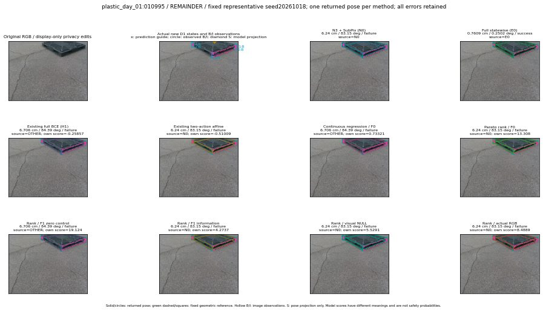

실선은 반환 자세, 초록 점선은 고정 기하 참조입니다. S는 영상 관측이 아닙니다. 점수는 모델별 의미가 다르며 보정된 안전 확률이 아닙니다. 개인정보 처리는 표시 사본에만 적용했습니다.
| 방법·seed | 위치 / 회전 / 공동성공 | 실제 출처 | 선택 후보 | 각 모델 자체 점수 |
|---|---|---|---|---|
| N0 | 6.24 cm / 83.15 deg / failure | N0 | N/A | N/A |
| E0 | 0.7609 cm / 0.2502 deg / success | E0 | N/A | N/A |
| E0_REGENERATED | 0.7609 cm / 0.2502 deg / success | E0 | E0_REGENERATED | N/A |
| POSEFIX_SUBPIX_PF_ANCHOR | 2.963 cm / 1.816 deg / success | OTHER | N/A | N/A |
| POSEFIX_SUBPIX_YOLO_ANCHOR | 2.963 cm / 1.816 deg / success | OTHER | N/A | N/A |
| D1_H1_MLP_s20261018 | 6.706 cm / 84.39 deg / failure | OTHER | G13/ORIGINAL_WD/selected | -0.2585713863372803 |
| D1_H1_MLP_s20261019 | 6.706 cm / 84.39 deg / failure | OTHER | G13/ORIGINAL_WD/selected | -0.36356863379478455 |
| D1_H1_MLP_s20261020 | 6.706 cm / 84.39 deg / failure | OTHER | G13/ORIGINAL_WD/selected | -0.6783733367919922 |
| D1_H1_PAIR_MLP_s20261018 | 0.7609 cm / 0.2502 deg / success | E0 | E0_REGENERATED | -1.61837899684906 |
| D1_H1_PAIR_MLP_s20261019 | 6.24 cm / 83.15 deg / failure | N0 | N0 | -1.4951887130737305 |
| D1_H1_PAIR_MLP_s20261020 | 6.24 cm / 83.15 deg / failure | N0 | N0 | -1.5969393253326416 |
| D1_H1_PAIR_ROLE_AFFINE_s20261018 | 6.24 cm / 83.15 deg / failure | N0 | N0 | -0.510087251663208 |
| D1_H1_PAIR_ROLE_AFFINE_s20261019 | 6.24 cm / 83.15 deg / failure | N0 | N0 | -0.9062705636024475 |
| D1_H1_PAIR_ROLE_AFFINE_s20261020 | 6.24 cm / 83.15 deg / failure | N0 | N0 | -0.5034021139144897 |
| R_CONT_F0_s20261018 | 6.706 cm / 84.39 deg / failure | OTHER | G13/ORIGINAL_WD/selected | 0.7332136034965515 |
| R_CONT_F0_s20261019 | 6.706 cm / 84.39 deg / failure | OTHER | G13/ORIGINAL_WD/selected | 0.7763073444366455 |
| R_CONT_F0_s20261020 | 6.706 cm / 84.39 deg / failure | OTHER | G13/ORIGINAL_WD/selected | 0.7741608619689941 |
| R_ORDER_F0_s20261018 | 6.24 cm / 83.15 deg / failure | N0 | N0 | 13.307619094848633 |
| R_ORDER_F0_s20261019 | 6.706 cm / 84.39 deg / failure | OTHER | G13/ORIGINAL_WD/selected | 7.643293857574463 |
| R_ORDER_F0_s20261020 | 6.706 cm / 84.39 deg / failure | OTHER | G13/ORIGINAL_WD/selected | -5.9678826332092285 |
| R_ORDER_F1_ZERO_s20261018 | 6.706 cm / 84.39 deg / failure | OTHER | G13/ORIGINAL_WD/selected | 19.124149322509766 |
| R_ORDER_F1_ZERO_s20261019 | 6.706 cm / 84.39 deg / failure | OTHER | G13/ORIGINAL_WD/selected | 11.439912796020508 |
| R_ORDER_F1_ZERO_s20261020 | 6.706 cm / 84.39 deg / failure | OTHER | G13/ORIGINAL_WD/selected | 11.628067016601562 |
| R_ORDER_F1_s20261018 | 6.24 cm / 83.15 deg / failure | N0 | N0 | 4.273653507232666 |
| R_ORDER_F1_s20261019 | 6.24 cm / 83.15 deg / failure | N0 | N0 | 7.512787818908691 |
| R_ORDER_F1_s20261020 | 6.706 cm / 84.39 deg / failure | OTHER | G13/ORIGINAL_WD/selected | 2.8642053604125977 |
| V_ORDER_NULL_s20261018 | 6.24 cm / 83.15 deg / failure | N0 | N0 | 5.52907657623291 |
| V_ORDER_NULL_s20261019 | 6.24 cm / 83.15 deg / failure | N0 | N0 | 3.1333694458007812 |
| V_ORDER_NULL_s20261020 | 6.706 cm / 84.39 deg / failure | OTHER | G13/ORIGINAL_WD/selected | 9.014686584472656 |
| V_ORDER_RGB_s20261018 | 6.24 cm / 83.15 deg / failure | N0 | N0 | 8.488907814025879 |
| V_ORDER_RGB_s20261019 | 6.24 cm / 83.15 deg / failure | N0 | N0 | 2.5923426151275635 |
| V_ORDER_RGB_s20261020 | 6.706 cm / 84.39 deg / failure | OTHER | G13/ORIGINAL_WD/selected | -5.513250827789307 |